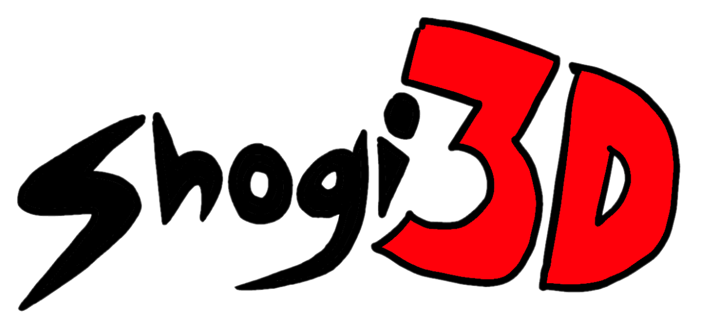
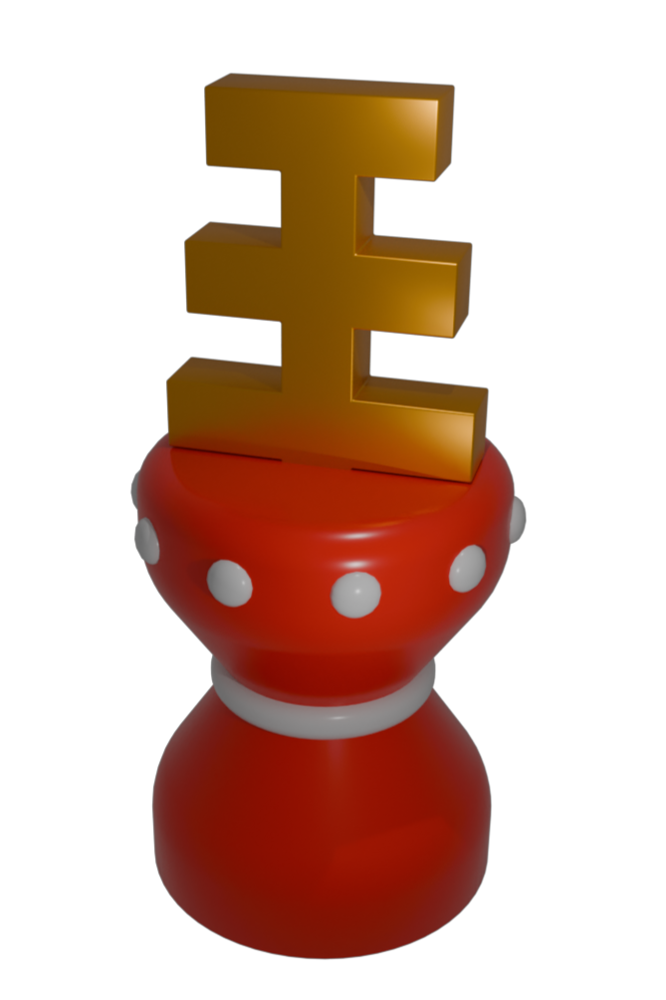
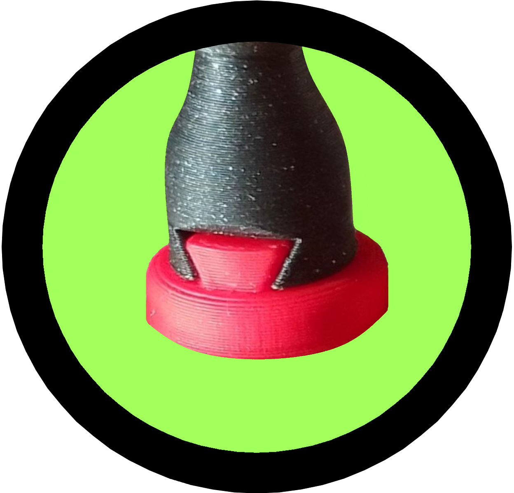
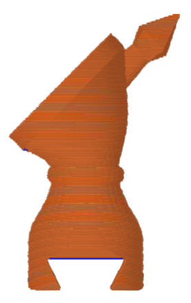
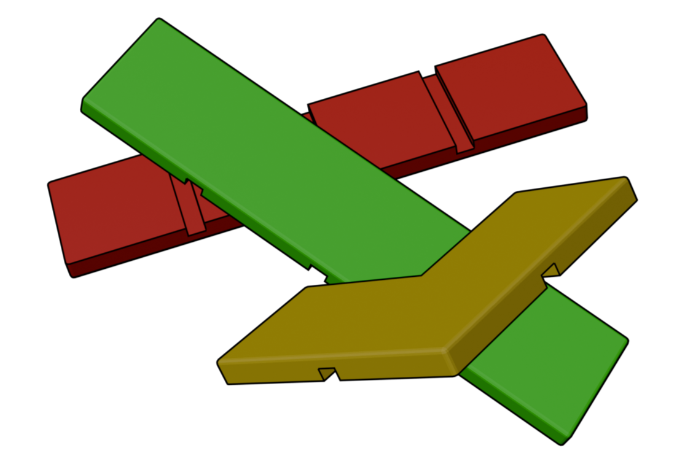
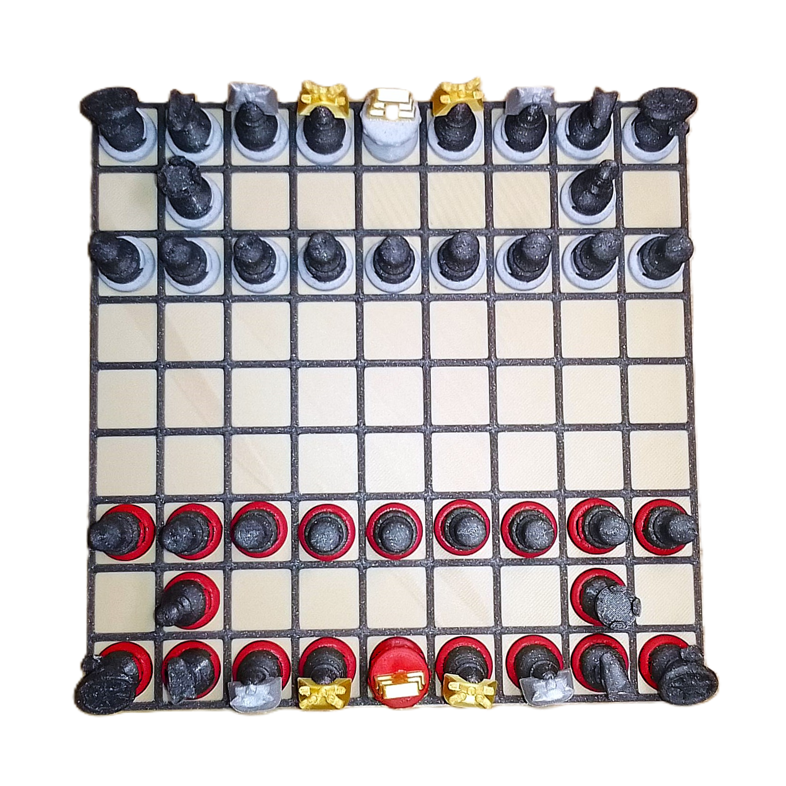
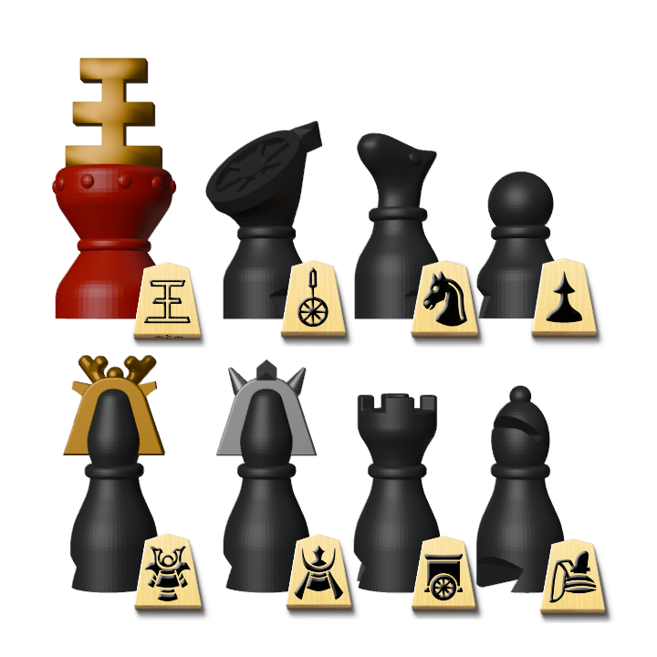

DESIGN LOYAL TO BOTH CHESS AND SHOGI
EASY SWAP SYSTEM
100% 3D PRINTED, NO SUPPORTS
GAME VARIANTSHave you ever tought that shogi deserve more than just flat wooden blocks?
We did and decided to change that. After few weeks of designing, we are proud to show you our solution, Shogi 3D.
You can make it at home right now and everything it will cost you is 170g of filament. And we'd say it's worth the experience.
It isn't perfect by any means. The setup takes much longer and the color swaps take a bit more time too. But you can change that, if you want. Remixes are more than welcome.
By default, you'll be able to play normal, Check, Dobutsu, Annan and Mini shogi with your set.
Choose a site of your liking to download the 3D files. Printables are recommended, because they allowed us to sort all the files for best clarity.
We are thrilled to see your takes on this idea!
Here you can download the .blend file for easier remixing. Choose the one that matches or is the closest to Blender version you are using.
New pieces design
Magnets for quicker swaps
Travel box and gameboard
Chu shogi or solution for Kyoto shogi
Here you'll find photos of prints or remixes of this project.
Created by Superkachna and puky with many thanks to vuct1 and voprts for help and reviews.
Would you like to have your photo here? Contact us: e-mail

